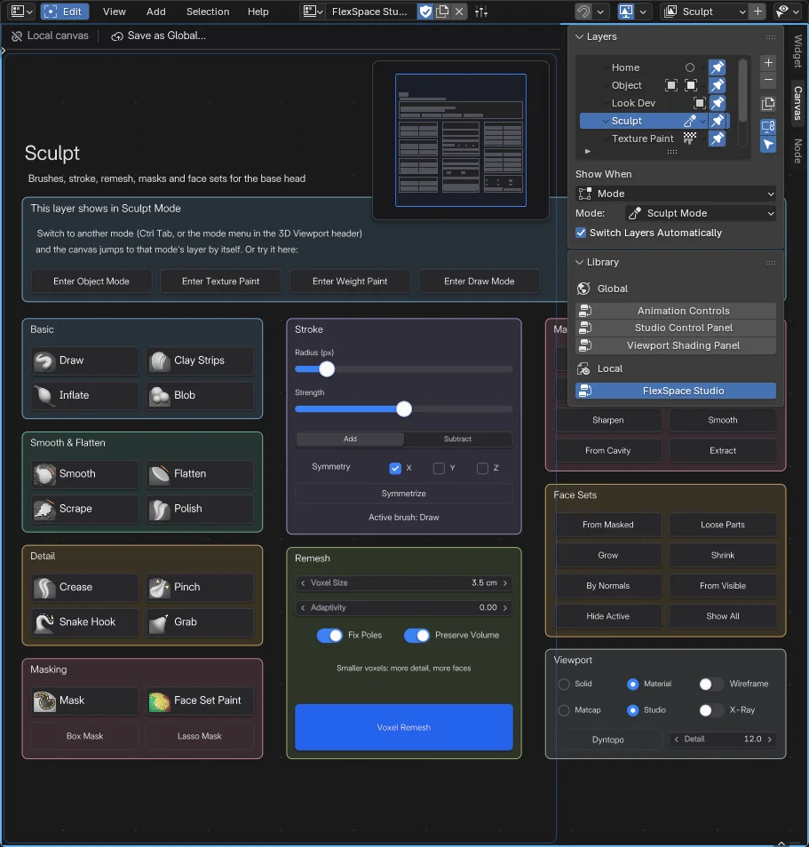
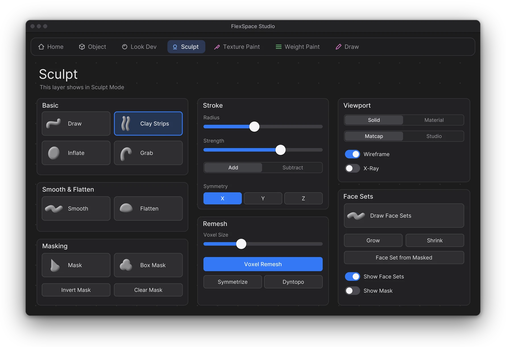
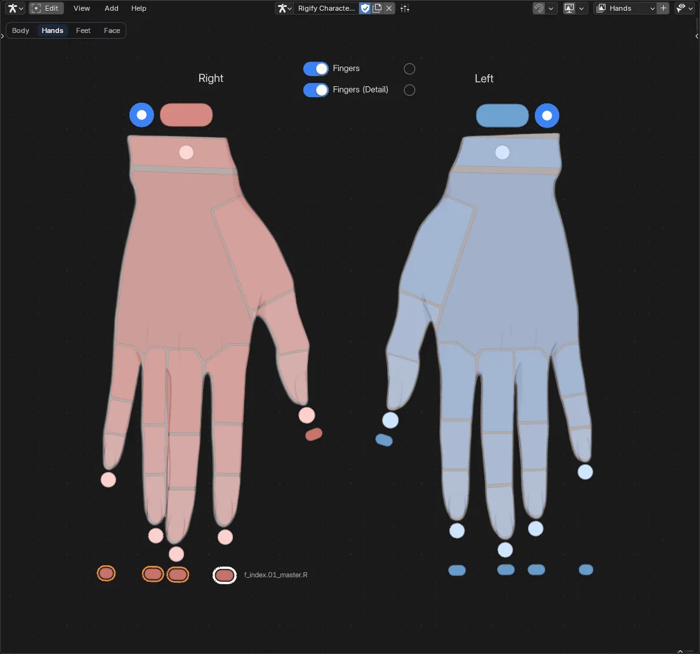
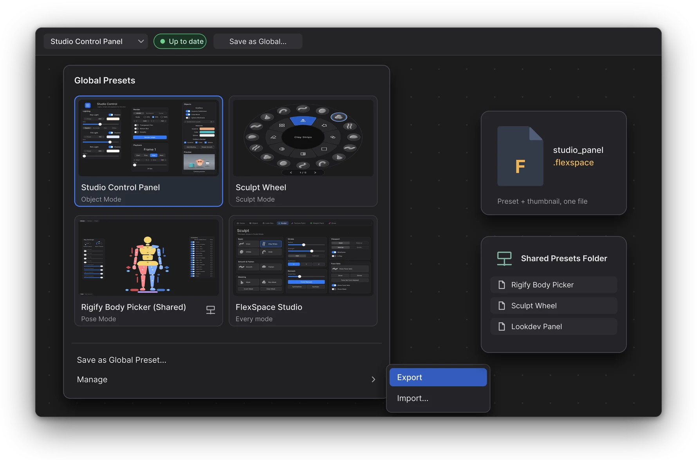
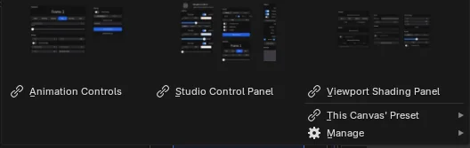
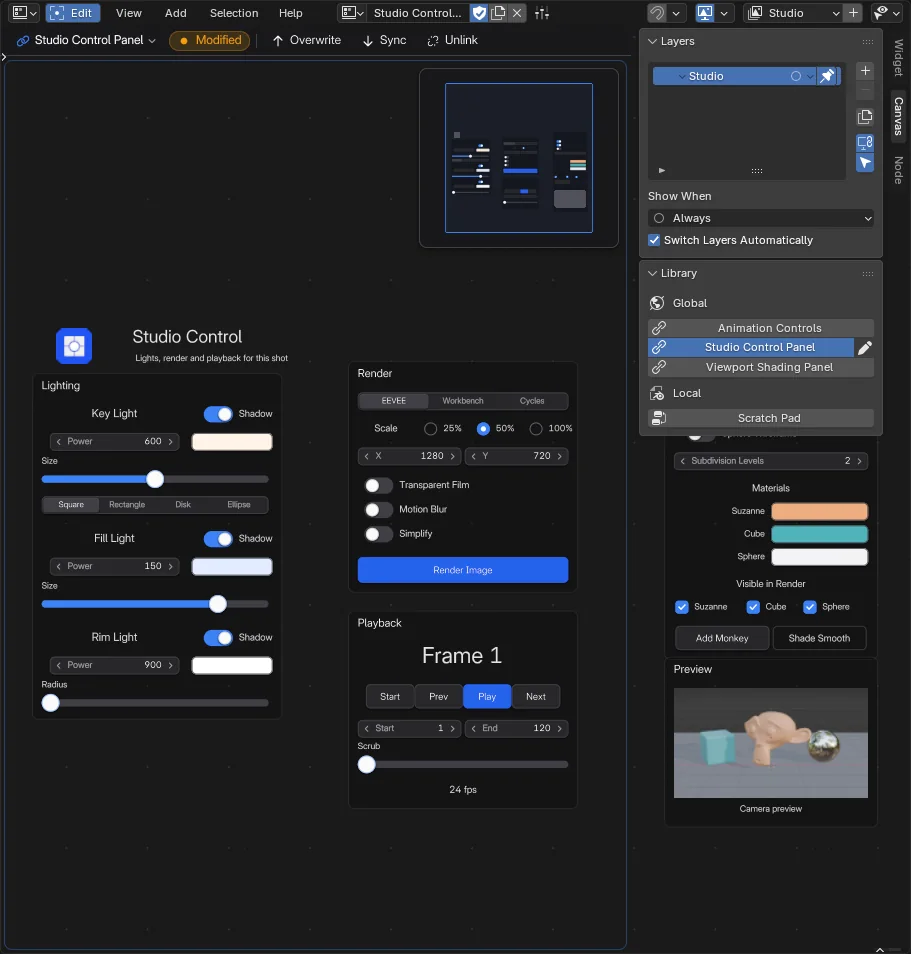

FlexSpace has two kinds of canvas, each with its own editor:
- Flex Space: a blank board for your own control panel. Put operator buttons, scripts, sliders, toggles, labels and images on it, then use them from any workspace.
- Armature Picker: a canvas saved with an armature, for picking its bones while you pose. Posing and bones are on The Armature Picker page.
Both work the same way. This page covers what they share.
Create one#
- Set an area to Flex Space (Editor Type menu).
- Click New.
Each canvas is saved in the .blend file. The selector in the header switches between canvases, renames them and adds a fake user.
To use a canvas from another file, bring it in with File > Link or File > Append (it is under NodeTree). The file keeps it, even if no editor shows it:
- A linked canvas stays in the other file and updates when that file changes. The scene keeps a reference to it. To remove it, delete it in the Outliner's Blender File view.
- An appended canvas is a copy you can edit. It gets a fake user.
 Screenshot
ScreenshotEdit Mode and Live Mode#
A canvas has two modes. Tab switches between them.
- Edit Mode is for building: Shift+A adds a widget, drag to move it, use the handles around the selection to resize or rotate it.
- Live Mode is for using: buttons run, toggles switch, sliders change their property. Rest the mouse on a widget for a tooltip: what it does or the property it drives (see Widgets > Tooltips).
On an Armature Picker, Live Mode is Blender's own Pose Mode: you use the picker while you pose, so the picker calls it Pose Mode.
A canvas linked from another file (File > Link) is always in Live Mode, even if its file was saved in Edit Mode. Edit its layout in the file it comes from.
Navigate#
- Middle mouse drag pans. Ctrl+Middle mouse drag zooms.
- The Wheel zooms. It follows Blender's Invert Zoom Wheel preference.
- Ctrl+Wheel scrolls sideways, Shift+Wheel up and down.
- A trackpad pans and pinches to zoom.
Numpad +andNumpad -zoom too. - Home frames every widget. In Edit Mode,
Numpad .frames the selected ones. - The minimap (header, picture icon) shows the whole canvas: click to centre, drag to pan.
Navigation is Blender's own, as in the Node Editor: it follows your View2D keymap, whatever button you bound. Industry Compatible (Alt with the middle or left mouse pans, Alt right mouse zooms), Emulate 3 Button Mouse and your own bindings work. A binding on a plain left or right click navigates instead of selecting, as it does in the Node Editor; an edit handle, a widget in Live Mode or a page tab under the mouse still takes the left click, but not an Alt click, so Industry Compatible pans over picker buttons too. Bind it to Click Drag to keep the click for selecting. A right mouse binding takes over the picker's keyframe pie, and a right mouse Click Drag binding works on a canvas even though the Node Editor's context menu would open first there. A 3D mouse (NDOF) doesn't navigate a canvas.
In Live Mode, a widget that uses the wheel keeps it: a List scrolls its rows, with the wheel or a two-finger trackpad scroll.
Resolution Scale and small windows#
The widgets follow Blender's Resolution Scale (Preferences > Interface, which also follows your screen's scaling in the system settings), so on a high-DPI screen they keep their size next to the rest of the interface:
- The first time a canvas shows in an editor, the editor zooms by your Resolution Scale, compared to the one the file was saved with. A file saved at 1.0 opens zoomed 2x at 2.0. Change the Resolution Scale while Blender runs and the canvas editors zoom with it. Maximizing the editor (Ctrl+Space), splitting it or duplicating it into a new window keeps the zoom it has: it doesn't zoom again.
- Each page's saved view follows it too, when you switch pages.
- Saving the file keeps the views as they are now, so opening it again at the same scale doesn't zoom twice.
- If a page's widgets were in view but don't fit the editor any more (a smaller window, a larger scale), the editor frames them when the canvas first shows, as Home does. It never zooms in for that.
Only the view changes: clicks, handles and hovers land where the widgets are drawn.
Pages and modes#
A canvas can have several pages, each with its own widgets. Each page can also be made for one Blender mode, for example Sculpt Mode or Weight Paint, or for one object of the scene. So one canvas can hold a sculpting page full of brushes, a weight paint page, the controls of one object and an everyday page, and show the right one for what you are doing.
- Pick the active page in the header, or click its tab at the top-left of the canvas in Live Mode (the tabs show when two or more pages are pinned).
- In a narrow editor the tabs squeeze to fit: object names go first, then long page names are shortened with an ellipsis. When even that doesn't fit, the tabs hide, and the page menu in the header still switches pages.
- Add a page with the + button next to it. A name another page already has gets a number (New Page 2).
- In Edit Mode, M moves the selected widgets to another page. The dialog starts on the first other page. A widget leaves its frame, unless the frame moves too: a moved frame takes its widgets along.
- The Pages panel in the Canvas tab of the sidebar (N) lists the pages. The icon at the right of each one sets its mode. Show When below the list sets when the active page fits.
- The buttons next to the list add, remove and duplicate the active page. A duplicate copies the page's widgets, with their frames, groups and Flex Boxes, and the page's settings: its mode, Show When and tab. An empty page can be duplicated too.
Show When has four choices:
- Always, the default: the page works everywhere.
- Mode: the page is for one Blender mode, set in Mode below it.
- Object: the page is for one object, set in Object below it. It fits while that object is the active one, in any mode. Pick the object in the field, with its eyedropper, or click Use Active for the active object.
- Object in Mode: both. For example, a tower's Geometry Nodes controls that only show while the tower is active in Object Mode.
A page made for a mode shows that mode's icon on its tab and in the header. A page made for an object shows the object's icon and name on its tab, after the page name.


Screenshot

What you see:
- A thin border in the mode's colour shows the active page's mode at a glance.
- A tab whose page doesn't fit right now (another mode, or another active object) is dimmed. You can still click it.
- When the active page needs another mode, the canvas is dimmed and its widgets don't react. A notice says which mode it needs. Click Enter on the notice to switch to that mode, when the active object can, or click another tab.
- When the active page is for an object that isn't the active one, the notice says This page is for that object. Click Select on it: the object becomes active and selected (shown again if you hid it with H), in the page's mode for Object in Mode.
- If the page's object was deleted, or isn't in this file, the notice says it is missing. Click Use on it to use the active object instead.
Switch Pages Automatically (in the Pages panel, on by default) shows the right page for you. When Blender's mode or the active object changes, the canvas shows the page that fits best. Object in Mode comes first, then Object, then Mode, then Always. When two pages fit just as well, the first tab wins, and a tab you clicked yourself stays while it still fits as well. With no page that fits, nothing changes. It waits while you edit the layout or drag a widget. Undo and redo count too: when Ctrl+Z brings back another mode or active object, the canvas shows the page that fits it.
A button can change the mode too: an Operator button that runs Enter Mode makes an object active and selected (and shows it if you hid it with H), frames it in the 3D Viewport if you like, and enters a mode with it. The FlexSpace Studio demo has one for each mode (see Recipes).
Some widgets need a mode of their own:
- The Add menu greys out the widgets that don't fit the active page's mode. Hover one to see why.
- On an Any Mode page, these widgets draw a small warning mark when Blender is in another mode.
An Armature Picker's pages always work in Pose Mode. Their mode is not shown and can't be changed.


ScreenshotShow or hide widget types#
The last menu of the header (Widget Types, the eye icon) hides or shows each kind of widget in this editor, by the names of the Add menu.
Keys you already know#
Canvas keys come first. Any key the canvas does not use goes on to Blender, as set in your keymap:
- Space plays the animation.
- Ctrl+Space maximizes the area.
- Ctrl+S saves.
- Ctrl+Z undoes.
Industry Compatible and custom bindings work too.
The canvas top bar#
In Edit Mode, a thin bar runs across the top of the canvas. It shows, from left to right:
- the global preset of the canvas (see below), or Local canvas;
- its state and the actions that apply;
- on an armature picker, the armature and how many of the picker's bones it has, for example Rig 142/142 bones;
- at the right end, the bindings that need you, on every page that works in the current mode and with the active object (shown widget types only): ⚠ 2 broken (a path that leads nowhere or to the wrong kind of property, a missing operator) and a muted 1 unbound (bound to nothing yet). With nothing broken or unbound, it doesn't show.
Click the binding count to go to the next broken widget: it is selected, its page is shown if it was on another one, the view frames it, and the sidebar opens on its Widget tab, where the note under its field says what is wrong. Click again for the next one. With nothing broken, a click goes through the unbound widgets instead.
The minimap, the Selection Bar and Home stay below the bar, so it never covers them. Hover an item for a tooltip.
In Live Mode there is no bar. A pill shows in the top-right corner only when the preset needs you: a newer version is available, or the preset is missing. Click it for the preset menu. With nothing to report, nothing shows.
 Screenshot
ScreenshotGlobal presets#
A global preset is a canvas saved outside the .blend file, so every project can use it. Presets are kept next to your themes, in the Library Folder of the add-on preferences (Addon Settings), in its canvases folder. By default that is presets/flexspace/canvases in Blender's user scripts folder. They survive updates, and uninstalling FlexSpace doesn't delete them.
The preset button next to the canvas selector opens the presets menu.
To save a canvas as a global preset:
- Show the canvas in Edit Mode.
- Click Save as Global... on the top bar (or Save as Global Preset... in the presets menu).
- Name it and click Save. A name another preset already has gets a number (My Panel 2), as an import does.
To use a preset in another project, open the presets menu and click its name. The menu shows each preset as a thumbnail. Presets with a page for Blender's current mode come first. A thumbnail is made each time you save or overwrite the preset.
A canvas added this way is linked to the preset. It remembers which version of the preset it came from. Your edits stay in this file until you choose to send them to the preset.
The top bar shows the preset's name with a link icon, then its state:
| Badge | Meaning |
|---|---|
| ✓ Up to date | Same as the preset. |
| ● Modified | You changed the canvas. The preset is unchanged. |
| ↓ vN available | Another project overwrote the preset: version N is newer. |
| ● Modified and ↓ vN available | Both changed. |
| ⚠ Missing | The preset's files are not on this computer. |
| ⚠ Unavailable | A newer Blender saved the preset, or its canvas type is not available. |
The buttons after the badge show only when they apply:
- Overwrite (↑, when you changed the canvas) sends your canvas to the preset. Other projects get it when they update. If another project changed the preset since your version, Blender asks first.
- Sync (↓, when either side changed) replaces your canvas with the preset. If you changed the canvas, Blender asks first, because your changes will be lost.
- Unlink keeps the canvas as a plain copy in this file.
Click the preset's name for the preset menu. It has the same actions, plus Restore Previous Version: the last 5 versions that Overwrite replaced. The one you pick becomes the preset's new version. Blender asks first. The presets menu also opens it, as This Canvas' Preset.
When a file opens, linked canvases you have not changed get the preset's newer version. Canvases you changed are never updated by themselves. To turn this off, clear Update Unmodified Presets in the add-on preferences.
A linked canvas whose preset is not on this computer keeps working from its own copy. The top bar shows ⚠ Missing, with Restore... (save it back as the preset) and Unlink.
To rename or delete a preset, use Manage in the presets menu. Both ask you to confirm. A new name another preset already has gets a number. Projects that use a deleted preset keep their canvas.




ScreenshotExport and import presets#
To move a preset to another computer, or to send it to someone, export it as one file:
- Open the presets menu, then Manage > Export.
- Click the preset and pick where to save it. The file ends in
.flexspace. It holds the preset's current version and its thumbnail.
To add a preset from a file, use Manage > Import... and pick the .flexspace file. The preset keeps its identity, so canvases that were linked to it in other files find it again.
If you already have this preset, If It Exists (in the file browser's side panel) decides what happens:
- Add a Copy (default): the preset is added as a new one, with a number after its name.
- Replace: the file's version replaces yours. Your old version is kept in Restore Previous Version, and linked canvases see it as an update.
Replace changes the preset where it is. If that preset is in the shared folder, it changes for everyone, whatever Into says. The preset also takes the name it has in the file, so a preset you renamed gets its old name back.
Import checks the file first. A damaged file, a file with anything else inside, or a preset saved by a newer Blender is refused with a message, and nothing is added.
Shared presets folder#
A team can share presets from one folder, for example on a network drive. Set Shared Presets Folder in the add-on preferences (Addon Settings, under Global Presets). The presets in that folder are listed with yours, and you add them the same way.
- In the Library panel, a shared preset shows a network-drive icon. If the folder can't be written, it shows a lock instead. The presets menu adds (Shared) to their names.
- If you can write to the folder, Overwrite, rename and delete work on shared presets too. They change the preset for everyone.
- If the folder is read-only, you can add and export its presets, but not change them.
To put a preset in the shared folder, export it, then import it with Into: Shared Folder. This option shows when a shared folder is set. You can also copy preset folders there.
FlexSpace reads the shared folder in the background, every few seconds, so a slow or offline network drive never freezes Blender. A preset a teammate adds shows up after a moment. While the folder can't be reached, its presets are not listed, and canvases linked to them show as missing.
The Library#
The Library panel, under Pages in the Canvas tab of the sidebar (N), lists the canvases of this editor's type:
- Global: every global preset, whether this file uses it or not. Click one to add it, or to show it if the file already has it. A linked preset shows a badge when it is modified or has an update.
- Local: the canvases in this file that are not linked to a preset. Click one to show it.
The canvas shown in the editor is highlighted.


ScreenshotCopy a canvas#
A canvas copied whole keeps its pages, frames, groups and Flex Boxes as they are. This covers the number button next to its name (make it single user), Duplicate in the Outliner, and File > Append from another file. The copy is independent: changing it never changes the original, and the same preset or template can be added several times.
Undo#
Every edit and every use of a widget is one undo step: a move, a slider drag, a toggle click. Adding, removing or duplicating a page and moving widgets to another page are one step each too.
Switching between Edit Mode and Live Mode is not a step, and undo never switches it back: undo a slider drag in Live Mode and you stay in Live Mode.
Clicking a page tab is not a step either. Undo and redo keep the page you are looking at, as they keep the view. The page of the step shows only when the step itself adds or removes pages or moves widgets to another page, and Switch Pages Automatically still follows a mode or active object that undo brings back.
The add-on preferences#
Edit > Preferences > Add-ons > FlexSpace has four sections, listed on the left:
- Modules: the built-in modules, with the defaults of their widgets.
- Themes: the colours, shape and type of the widgets. Make your own theme here.
- Demo Files: example files to open in a new window (see Demo Files).
- Addon Settings: Appearance (Auto, Dark, Light), widget animations, Key Hints, where the Selection Bar shows, Update Unmodified Presets, the Shared Presets Folder, and the Library Folder (your themes and global presets).